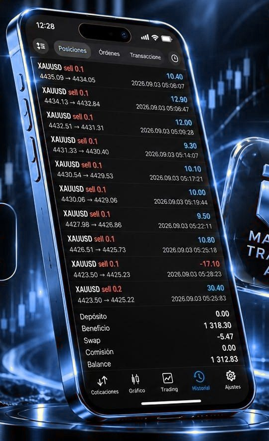
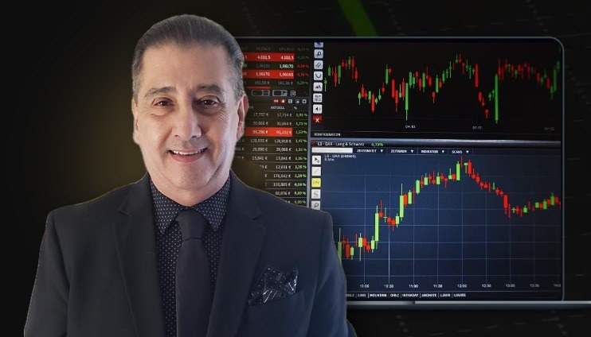

Gana quien se atreve
Hoy no siempre gana más dinero la persona más preparada, sino la que se atreve a dar el paso.
Disciplina · Estrategia · Resultados
Formación de cero a avanzado, tecnología con inteligencia artificial y acompañamiento diario de un mentor. Todo en una sola membresía.
¿Por qué estás aquí?
Tu tiempo es tu mayor activo. Una forma de medir tu riqueza es cuánto tiempo podrías mantener tu estilo de vida sin trabajar.
Internet ha democratizado las oportunidades
Hoy no siempre gana más dinero la persona más preparada, sino la que se atreve a dar el paso.
Lo más prudente es avanzar paso a paso: formarte y practicar al mismo tiempo, con acompañamiento.

¿Qué es Masters Traders?
Estrategias de trading y marketing que se miden, se prueban y se escalan.
Formación de cero a avanzado, para aprender a tu ritmo.
Analiza el mercado en tiempo real, muestra posibles puntos de entrada y te explica el porqué de cada movimiento. Incluye backtesting.
Recibe las señales del mentor.
Con el mentor, cada día.
Trading automatizado que ejecuta operaciones según una estrategia predefinida. Eliges riesgo bajo, medio o alto y ajustas el lotaje a tu capital y tu perfil.
Te permiten operar sin estar presente.
Masters Traders Academy
El primer paso lo das tú. Formación profesional, herramientas avanzadas y una comunidad global te acompañan en el resto.
Quiero empezar